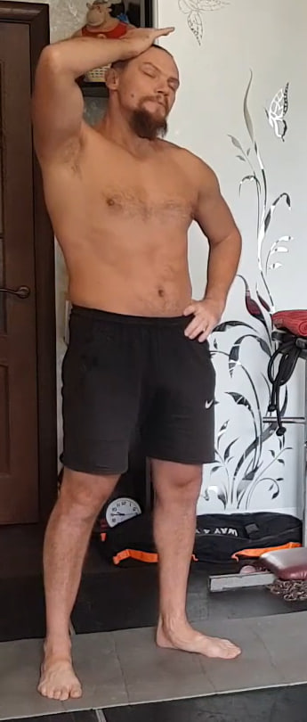
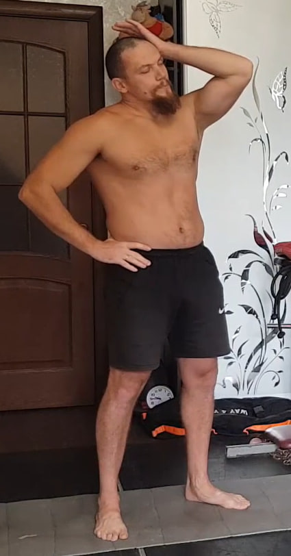
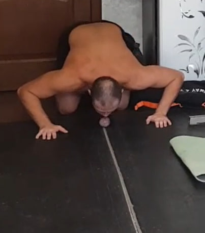
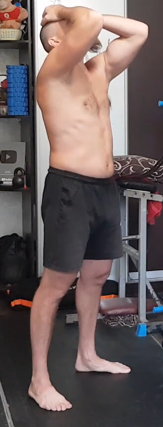
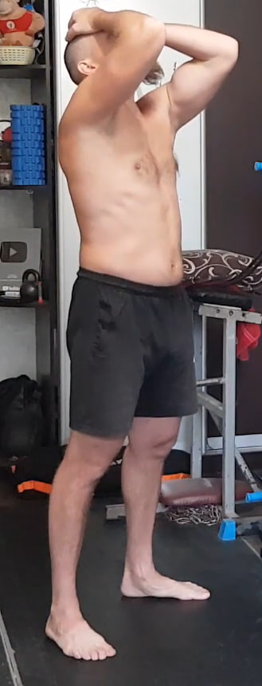
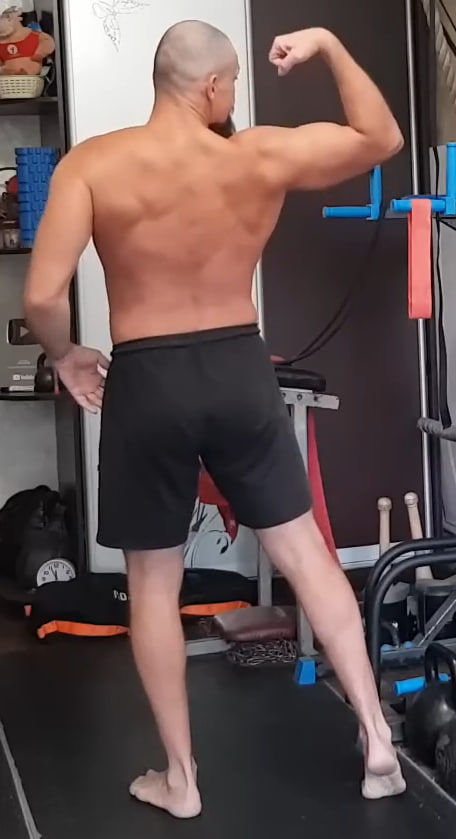
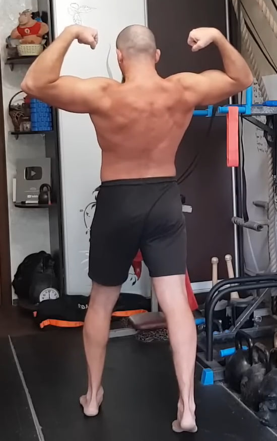
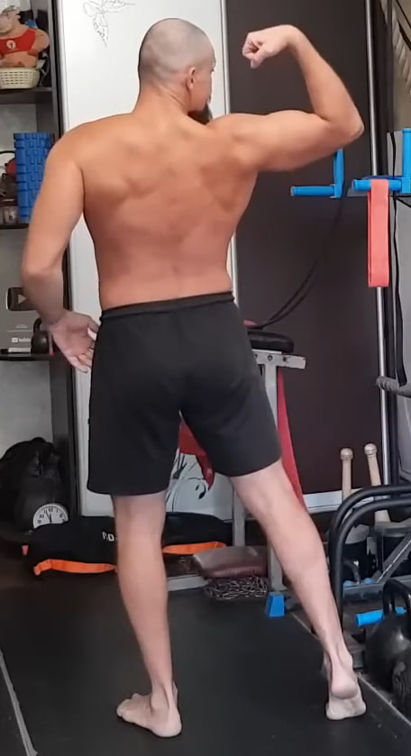
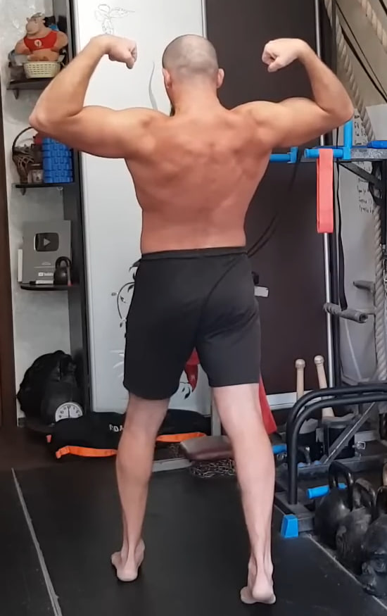
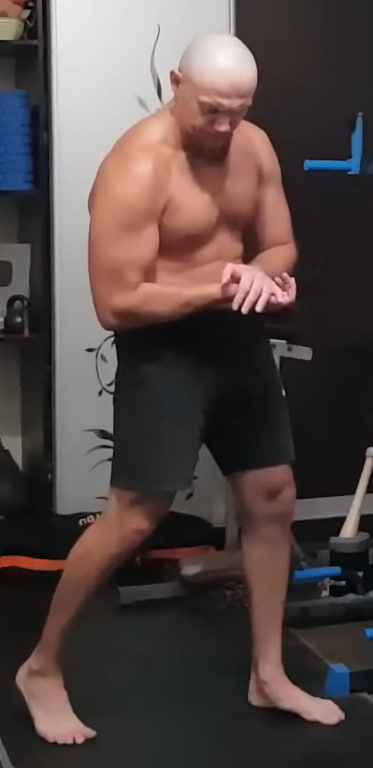

1. Flexión lateral isométrica del cuello (resistencia en sentido contrario)
 De pie, espalda recta. Coloca la palma en la parte superior-lateral de la cabeza. Ahora intenta inclinar la cabeza hacia el lado contrario de la mano, mientras la mano bloquea por completo el movimiento. No debe haber desplazamiento visible. Respira tranquilo.
Mantén 10 segundos y realiza 10 repeticiones por cada lado.
2. (Pendiente)
Contenido por añadir.
3. (Pendiente)
Contenido por añadir.
4. Isometría diagonal del cuello con apoyo de una mano

Inclina ligeramente la cabeza hacia adelante y gírala un poco hacia el lado de la mano que ofrece la resistencia. Coloca la palma sobre la parte frontal-lateral de la cabeza. Desde esta posición intenta inclinar y girar la cabeza aún más en esa misma dirección, mientras la mano bloquea por completo el movimiento. No debe haber desplazamiento visible.
Mantén 10 segundos y realiza 10 repeticiones por cada lado.
5. Rodar una pelota con la barbilla
Ponte a cuatro apoyos. Usa una pelota pequeña (mejor de tenis) o un calcetín bien enrollado. Con la barbilla empieza a rodar el objeto por el suelo hacia adelante. El objetivo es rodar, no empujar. Hazlo controlado.
Mantén aproximadamente 10 segundos y repite 10 veces.
6. Isometría de extensión del cuello hacia atrás
 

Colócate de pie. Coloca ambas palmas sobre la parte posterior de la cabeza. Lleva ligeramente la cabeza hacia atrás, sin echarla completamente. Desde esta posición intenta extender el cuello hacia atrás, mientras las manos bloquean por completo el movimiento.
No debe haber desplazamiento visible: toda la tensión es interna. El trabajo principal se siente en la parte posterior del cuello. Mantén los hombros relajados y el torso estable.
Realiza 10 segundos × 10 repeticiones.
7. Extensión profunda de cuello y mandíbula desde rodillas


Arrodíllate y siéntate sobre los pies (si es difícil, puedes apoyar los dedos de los pies). Lleva el torso hacia atrás, sujeta los talones con las manos y deja la cabeza hacia atrás de forma controlada.
En esta postura, abre y cierra la boca 10 veces (amplio y controlado, sin tirones). Luego vuelve despacio hacia adelante, pega la barbilla al pecho y mantén 10 segundos.
Esto cuenta como 1 repetición. Realiza 10 repeticiones.
8. Desgarro isométrico de la toalla en tres posiciones


Toma una toalla (o tela resistente) y mantenla tensa con ambas manos. El objetivo es intentar romperla aplicando máxima fuerza, sin que haya movimiento visible.
Realiza el desgarro en tres posiciones:
1) al
frente del pecho,
2) por encima de la cabeza,
3) abajo,
delante de los muslos (o detrás del cuerpo, según tu variante).
En cada posición mantén 10 segundos y haz 10 repeticiones.
9. Isometría de flexión de muñeca con resistencia de la otra mano

Colócate en una posición estable. Con una mano sujeta la muñeca de la otra. La muñeca de trabajo intenta flexionarse hacia abajo, mientras la otra mano bloquea completamente el movimiento, creando una resistencia isométrica fuerte.
Mantén la tensión 10 segundos y realiza 10 repeticiones por cada mano.
10. Bíceps isométrico con brazo casi extendido hacia abajo

Baja el brazo de trabajo casi completamente extendido, dejando un pequeño ángulo en el codo. La palma mira hacia arriba. Con la otra mano sujeta la muñeca/antebrazo y tira hacia abajo, mientras el brazo de trabajo intenta flexionarse hacia arriba (como un curl), pero el movimiento queda bloqueado.
Hazlo suave y controlado. Mantén un conteo lento de 10. Realiza 10 repeticiones por cada brazo.
11. Contracción isométrica del bíceps (sin movimiento)
 



Colócate de pie. Flexiona el brazo y contrae el bíceps al máximo, como en una contracción completa del músculo. El hombro permanece abajo, el cuerpo estable y el cuello relajado.
El objetivo es crear una tensión isométrica máxima en el bíceps, sin balanceos, sin cambios de posición y sin movimiento visible.
Mantén la tensión 10 segundos y realiza 10 repeticiones por cada brazo.
12. Flexiones profundas y lentas

Adopta la posición de plancha con el cuerpo alineado desde la cabeza hasta los pies. Desciende lentamente, de forma controlada, hasta que el pecho quede lo más cerca posible del suelo.
Luego empuja el cuerpo hacia arriba con la misma lentitud, sin arquear la zona lumbar ni elevar la cadera. Todo el movimiento se realiza bajo control total, sin impulsos.
Realiza 10 repeticiones.
13. Flexiones con pausas isométricas

Adopta la posición de plancha, manteniendo el cuerpo alineado. Desciende a la posición baja de la flexión y mantén durante 10 segundos.
Luego, en 2 segundos, sube de forma controlada a la posición alta y vuelve a mantener 10 segundos.
El ciclo posición baja → posición alta cuenta como una repetición. Realiza 10 repeticiones.
14. Repetición de la contracción isométrica del bíceps
Repite el ejercicio nº 11 sin ningún cambio.
Mantén la tensión 10 segundos y realiza 10 repeticiones por cada brazo.
15. Repetición de la isometría de flexión de muñeca
Repite el ejercicio nº 9 sin ningún cambio.
Mantén la tensión 10 segundos y realiza 10 repeticiones por cada mano.